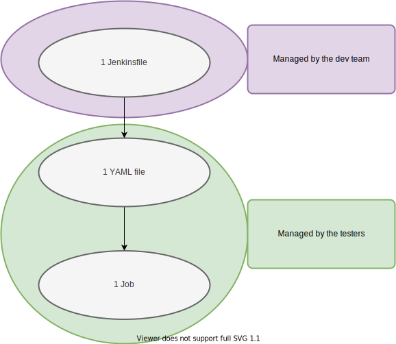

Package kalash
Kalash is a test runner made originally for hardware test automation at Technica Engineering GmbH. 🚀
Features
What you can do with Kalash
- Run Software or Hardware tests in an automated context as well as locally:
- As singular Python Scripts
- As test suites defined in a simple declarative YAML file or more flexible Python configuration files
- In isolation from lower-level automation server job configuration (e.g. you don't need to manage Jenkins to change the definition of a test suite to be triggered by a job)
- Filter test cases by way more than just a name, defining rich, complex test suites
- Document metadata for your test cases in a manner that is both human-readable and machine-readable
- Generate standard XML XUnit reports
- Log whatever happens within the test cases on a per-test-case level of granularity
- Parameterize test cases easily
- Perform hypothetical runs
Read Why Use Kalash to get a more comprehenisve overview of the system.
Notable Features Available
- Filtering by metadata tags
- Python or YAML declarative-style configuration files for test suites
- Setup and Teardown scripts are supported
--no-recurseoption--fail-fastoption- Each test case has its own logger
--what-ifoption- Logger configuration via CLI
- Dynamic parametrization of the test cases
Notable Features Planned
- Log files grouping based on arbitrary metadata tags
- Stable last-result filtering
- JIRA integration - loading metadata automatically from JIRA tickets
Basic Usage
Before installation
We require Python 3.7 or higher version to be installed on your system before Kalash can be installed.
Describing how to get Python working is out of the scope of our documentation.
Installation
Simply run pip install kalash.
Note: for this to work pip needs to be in your PATH.
Why use Kalash
Kalash was originally created as a lightweight wrapper around a unittest.TestCase that insulates QA Engineers from the necessity of managing automation services like Jenkins and increasing security and stability of a running automation service instance.
Simply put, we've created this because we didn't want to give admin access over Jenkins to all our QA Engineers to reduce risk of some important jobs being clobbered. 😀
Kalash has grown out to include a number of amazing features:
- built-in logger on the
TestCaseclass - runtime access to runner's configuration enabling new parametrization strategies
- ability to filter test cases against specific values outlined in the metadata tag
- ability to define complex test suites in declarative YAML or Python configuration files to modify runtime collection of tests
- ability to inspect hypothetical test suites that would run were the tests to be triggered
The system
Kalash is originally intended for an automation system defined as:

What do you need to do to use it for test automation?
- You create a YAML and name it as you want. You put that file in the
yamlsfolder in a test repository. We recommend to name the YAML file after the job name. If you want ajsoncreate a JSON. It will work as well. - You contact IT so they can create an automated job for you. Or create a CI job on your own if you're not working in a team.
- Once you have a job created any updates you make to the YAML file will affect the test collection you've specified.
Creating a test suite
A suite is defined by a singular configuration file. The file may be:
.pyfile - should contain exactly oneTriggerinstance.yamlfile - should follow a specification described in yaml specification
Kalash will collect only test cases following a rigid template.
Creating test cases
Each test should be based on the following test template:
"""
META_START
---
id: 999999002_99-Blah_9-Whatever
META_END
"""
from kalash.run import MetaLoader, TestCase, main
import os
class TestSomething(TestCase):
def test_1(self, name):
print(f"Running for {name}")
if __name__ == '__main__':
main(testLoader=MetaLoader())
This is the most minimal test template specifying a metadata section and a slightly modified wrapped unittest.TestCase class with additional features.
A more built-out example would be:
"""
META_START
---
id: 999999002_99-Blah_9-Whatever # ID of the test
use_cases: # JIRA ticket names of the related use cases
- FearFactory # Example JIRA ticket name
workbenches: # Workbench where the test is meant to be run
- Gojira # Example workbench
devices: # Resources to run with
- cancombo
- lincombo
META_END
"""
from kalash.run import MetaLoader, TestCase, main, parameterized
class TestAdvancedFiltering1(TestCase):
@parameterized.expand(['lincombo', 'cancombo'])
def test_1(self, name):
self.allow_when('run_only_with', name)
print(f"Running for {name}")
if __name__ == '__main__':
main(testLoader=MetaLoader())
Running the tests
To trigger a particular test suite you may run kalash run -f ./path/to/config.py and if you need more configuration options run kalash --help.
Reports
By default test reports will be written to the current working directory, unless overridden by the report key in the kalash.config section (see: yaml specification).
The reports produced by Kalash are standard XML XUnit reports that can be parsed and displayed by a treasure trove of open-source applications.
Logging
Every test case has a built-in logger that gets destroyed as soon as the test is complete. You can access it via self.logger on the TestCase class. For example:
"""
META_START
---
id: 999999001_99-Blah_9-Whatever
META_END
"""
from kalash.run import MetaLoader, TestCase, main
class TestLogger1(TestCase):
def test_1(self):
self.logger.info("hello1")
if __name__ == '__main__':
main(testLoader=MetaLoader())
Logger configuration
The logger can be configured using the following CLI switches:
--log-dir- base directory for logs--log-level- Python'slogginglibrary log verbosity--log-format- Python'slogginglibrary formatter string--group-by- grouping log files by metadata tags
By default logs are written to a logs folder in the current working directory. Each test case gets its separate folder and log files contained within start with a timestamp.
If --group-by is used, those test case folders are grouped by any specified property from the metadata tag. For example --group-by devices will group test cases by the devices key. If devices is a single string e.g. "cancombo" the log tree will be "logs/cancombo/TestCaseID/123456789_TestCaseID". If devices is a list, e.g. ["cancombo", "lincombo"], the log tree will be "logs/cancombo_lincombo/TestCaseID/123456789_TestCaseID".
JSON Schema
You can make use of a JSON schema to make writing your YAML or JSON files a little easier. The schema is located here.
Example schema setup - VSCode
Every editor handles JSON schemas a little differently. Here is an example on how to configure Visual Studio Code.
- Open Settings (Ctrl+Shift+P and type in settings) as JSON.
-
Modify or add
"yaml.schemas"like this:json "yaml.schemas": { "https://raw.githubusercontent.com/Technica-Engineering/kalash/feature/7-8-schemas-and-json/kalash/spec.schema.json": "*.k.yaml" }, -
Name Kalash YAML files with
.k.yamlextension. When you open such file, the schema will be automatically loaded and will suggest what keys are allowed in the YAML file.
If you are using JSON files instead, you could do this:
- Open Settings (Ctrl+Shift+P and type in settings) as JSON.
-
Modify or add
"json.schemas"like this:json "json.schemas": { "https://raw.githubusercontent.com/Technica-Engineering/kalash/feature/7-8-schemas-and-json/kalash/spec.schema.json": "*.k.json" }, -
Name Kalash JSON files with
.k.jsonextension. When you open such file, the schema will be automatically loaded and will suggest what keys are allowed in the JSON file.
Integration with CI vendors
Kalash is vendor-independent. That is, there is literally no difference whether you want to use Jenkins or GitLab CI, or anything else. Here's an example of usage with Jenkins:
stage ("Call kalash runner"){
steps{
bat '''CALL conda.bat activate some_env
kalash run -f ".kalash.yaml"
'''
}
}
What's happenning there? If you add this to your Jenkinsfile in tests repository and add a ".kalash.yaml" file, kalash will use that file (kalash run -f ".kalash.yaml" command) and run specified tests with specified configuration. With Jenkins it's best to use Anaconda3 or Miniconda3 and you need to use a Python environment which has kalash installed.
In practice every ".kalash.yaml" file will translate to a single specific job that will have a corresponding Jenkinsfile. The reason we split kalash away from Jenkins is to allow the QA engineers to specify test configuration themselves without meddling into CI server pipeline, where it's way easier to break stuff and the file looks way more daunting to even understand.
For example: Jenkinsfiles may be created in a jenkinsfiles folder in each test repository and yamls folder wilcouldl contain the YAMLs managed by QA engineers. In Jenkins, use SCM checkout and specify the path to correct Jenkinsfile that maps to a given job requested by QA engineers.
YAML Config File Specification
Example YAML (simple)
A conventional metadata tag in a test template looks like this:
"""
META_START
---
id: 000000003_12_0_1234-SomethingElse
use_cases:
- Some Jira ticket
workbenches:
- BloodhoundGang
META_END
Below the META_END tag you can write any additional comments you need
for your test case.
"""
It's always placed at the top of the test case file.
Imagine it's saved under test_something.py. The simplest way to run the test case using Kalash would be:
-
Create a
something.yamlfile with the following contents:yaml tests: - path: './test_something.py' -
Run
kalash run -f ./something.yaml.
Config section
The configuration file is split into two components: tests and kalash.config.
tests- this section defines solely the test collection process.kalash.config- this section **modifies runtime behavior of the test cases.
kalash.config section is optional.
Advanced features
Read advanced configuration options to learn more about the more advanced configuration options using the YAML file.
Example YAML (complex)
tests:
- path: '$(WorkDir)/tests/test_scripts'
id:
- '000000003_12_0_1234-SomethingElse'
setup: '$(ThisFile)/../tests/test_scripts/setup_teardown/setup_files/setup.py'
teardown: '$(WorkDir)/tests/test_scripts/setup_teardown/setup_files/teardown.py'
config:
report: './kalash_reports'
Full API specification
The allowed up-to date values for the YAML specification are outlined in the documentation of the Spec class.
Python Config File Specification
Python configuration files follow the same pattern as the YAML configuration files, albeit in Python code. It's best to explain it with an example:
from kalash.config import CliConfig, Config, Trigger, Test
from kalash.run import run
t = Trigger(
tests=[
Test(
path='./tests/some_directory'
)
],
config=Config(report='report-dir')
)
if __name__ == "__main__":
run(t)
The entrypoint kalash.run accepts a Trigger instance which is a direct equivalent of a YAML configuration file. A Trigger object consists of:
tests- a list ofTestobjects responsible for test collection configurationkalash.config- aConfigobject that modifies runtime parameters
Extending specification
You can inherit from the original Test and Config classes to extend the configuration:
from typing import Any, Dict, List
from kalash.config import CliConfig, Config, Trigger, Test, dataclass, field
from kalash.run import run
@dataclass
class CustomConfig(Config):
run_only_with: List[str] = field(default_factory=list)
t = Trigger(
tests=[
Test(
path='./tests/test_scripts/python_instead_of_yaml'
)
],
config=CustomConfig(run_only_with=['cancombo'])
)
if __name__ == "__main__":
run(t)
One caveat here is that you must provide default values for each new attribute on a customized class. That's because the default classes already have sensible defaults baked in and you cannot place attributes without default values after attributes with default values.
Running tests with a Python config
Because this is a Python file you can either run it directly or still use Kalash CLI to trigger your tests.
Running with Kalash CLI
Simply put: kalash run -f ./path/to/config.py.
Runing directly with Python
If the __main__ clause is present in the file you may just trigger the script with Python, e.g. python ./path/to/config.py.
The difference is that when you run this as a Python script you will not be able to provide additional CLI flags on the command line. But you may choose to feed them in directly within the configuration file:
from kalash.config import CliConfig, Config, Trigger, Test
from kalash.run import run
t = Trigger(
tests=[
Test(
path='./tests/some_directory'
)
],
config=Config(report='report-dir')
)
if __name__ == "__main__":
run(t, CliConfig(log_dir='logs'))
Note:
- The python config is a better choice when you want to preserve CLI configuration for all future runs.
- The
CliConfigspecified in the file will be overridden if you run this withkalashCLI command.
Advanced Configuration and Usage
Base directory resolution in config files
By default an expression like path: './test_something.py' defaults to working directory: it will look for paths relative to where kalash command is run. For convenience we expose the following directory resolution options:
$(WorkDir)- same behavior as., relative to working directory.$(ThisFile)- relative to the location of the configuration file itself.
Setup and teardown
On top of the standard setUp and tearDown methods we offer setup and teardown script mappings. For example:
tests:
- path: '$(WorkDir)/tests/test_scripts'
setup: '$(ThisFile)/../tests/test_scripts/setup_teardown/setup_files/setup.py'
teardown: '$(WorkDir)/tests/test_scripts/setup_teardown/setup_files/teardown.py'
config:
report: './kalash_reports'
setup: '$(ThisFile)/../tests/test_scripts/setup_teardown/setup_files/setup.py'
teardown: '$(WorkDir)/tests/test_scripts/setup_teardown/setup_files/teardown.py'
The two flavors can be explained as follows:
- If the
setup/teardownstep is under aTestelement (undertestsin the YAML config) it runs once before/after the complete collection of tests from aTestelement. - If the
setup/teardownstep is under aConfigelement (underkalash.configin the YAML config) it runs once before/after the complete collection of tests from the entire run.
Accessing configuration from within test cases
To allow dynamic parametrization we expose the following pattern:
"""
META_START
---
id: 999999002_99-Blah_9-Whatever
META_END
"""
from kalash.run import MetaLoader, TestCase, main, parameterized
import os
class TestAdvancedFiltering1(TestCase):
@parameterized.expand(['lincombo', 'cancombo'])
def test_1(self, name):
self.allow_when('run_only_with', name)
print(f"Running for {name}")
if __name__ == '__main__':
main(testLoader=MetaLoader())
@parameterized.expand is essentially unchanged, coming from the original parameterized Python library. self.allow_when queries the kalash.config section of the used configuration file with run_only_with and checks whether name is within the list of the run_only_with tags. Any configuration options can be filtered in this way, even report.
self.allow_when will only allow a parameterized test case to be triggered when the condition is met. If the file is run locally (triggered as a Python script, not via Kalash), the call will simply be ignored (since there is no config being provided in such a situation).
Accessing configuration directly
The TestCase class exposes trigger property which lets you directly refer to the test case configuration elements:
"""
META_START
---
id: 999999002_99-Blah_9-Whatever
META_END
"""
from kalash.run import MetaLoader, TestCase, main, parameterized
class TestSomething(TestCase):
def test_1(self, name):
if self.trigger:
if self.trigger.config:
# prints the `config` section
print(self.trigger.config)
if __name__ == '__main__':
main(testLoader=MetaLoader())
The name trigger comes from the name of the class used in Python configuration files.
Hypothetical runs
If you wish to see what tests Kalash would run if it were to be triggered use the --what-if flag.
kalash run -f some.yaml --what-if paths- list all collected test pathskalash run -f some.yaml --what-if ids- list all collected test ids
Contributing
Prerequisites
All you need to develop for this project is to pip install nox.
nox is a build and test automation driver for Python development that will automatically prepare your environment for testing.
Contributing - process 🖋
Before submitting a pull request you must make sure that the CI pipeline passes all tests. The simplest way to contribute is thus:
- Read the Processes and conventions section.
- Fork this repo.
- Install Kalash in develop mode:
pip install -e '.[dev]'. - Implement tests for your change (Test-Driven Development).
- Implement your change.
- If you have modified the user-facing data model (e.g.
Trigger,TestorMetaclasses), make sure to regenerate the JSON schema (nox -e json_schema). - Run tests locally using
nox -e test. - Check whether your tests have satisfactory coverage: Run
coverage htmlafter triggering the tests and checkhtmlcov/index.html. Our minimum target coverage is 85%. - Run
flake8at the root of this repository and correct any code-style deviations. - Document the change.
- Update the
CHANGELOG. Use the correct style guidelines for the changelog. - Push code to your fork.
- Run the CI pipeline (will run tests, code quality checks).
- Create a pull request to the
developbranch.
Note: requests to merge directly to master will be automatically rejected.
New releases are prepared periodically by merging a stable develop branch into master. When the merge happens documentation is built and a new package will be created and published in PyPI. Maintainers merging to master should heed to change the version tag in setup.cfg.
Processes and Conventions 👮♀️
We use a slightly modified GitFlow practice in our development:
- Each change/issue should have its own branch named after the issue ID, for instance:
chore/2-git-hooks-setupfix/123-some-bugfeature/456-some-featureThe part we really care about is whatever you place before the slash and should contain one of the well known Git keywords:chorefixfeaturedocrefactor- etc.
- Each commit should start with the aforementioned keywords, e.g.
chore: updating version tag. - There are 2 protected branches:
developandmaster. - When creating a pull request you should create a pull request for
developbranch. In our workflowmastercontains only stable code most of the times equivalent to the latest release.
Code quality 💯
Few things to heed:
- If
flake8tells you your code is crap, fix it before creating a pull request. We want this project to have high code quality standards. The pipeline will check it for you, so if it doesn't pass you will have to correct yourself before proceeding. 😄 - Use type hints. Seriosusly. Code that takes little care of the types will be rejected right away. We know Python is dynamically typed but we don't like it. It seems like a pain in the neck in the beginning but spend a month with type hints and you'll never go back. It's much easier to catch nasty bugs when you use them.
- Create tests. Generally, small fixes might be accepted without tests, usually when we're dealing with something that's blatantly obvious. But you should always prefer to create tests for your changes and test locally before creating a pull request.
- Use a good editor or an IDE. You should aim for no red squiggly lines, be it in VSCode or PyCharm, doesn't matter. But be sure that if one of the maintainers pulls your change and sees red squiggly lines, you will need to correct your changes accordingly before anything can be merged.
- If you're using type aliases consider adding them in
"config.py"and documenting them in the__doc__attribute."config.py"contains the base data model for Kalash, we want to keep it that way so that it's easy to reason about type dependencies. Type aliases are recommended because if whenever you decide you need a different type, you only need to change one line (unless the type is incompatible). 😀
Credits
Made with love by Technica Engineering GmbH Product Testing team:
- Krzysztof Czarnecki
- Pablo Prol
- Shane Butler
Special thanks to our friends who made this open-source release possible:
- Thanh Pham
- Arantxa Fernandez
- Guillermo Castanera
- Daniel Barreiro
Expand source code
"""
.. include:: ./pdoc/header.md
.. include:: ./pdoc/features.md
.. include:: ./pdoc/basic_usage.md
.. include:: ./pdoc/automation_servers.md
.. include:: ./pdoc/yaml_spec.md
.. include:: ./pdoc/python_spec.md
.. include:: ./pdoc/advanced_config.md
.. include:: ./pdoc/contributing.md
.. include:: ./pdoc/trailer.md
"""
__version__ = "4.0.0"Sub-modules
kalash.collectors-
This module contains lowest-level test collection strategies for a particular version of a test template …
kalash.config-
Module containing the entire configuration data model for Kalash …
kalash.filterkalash.kalash_test_loaderkalash.last_result_filterkalash.logkalash.metaparserkalash.runkalash.smuggle-
Adapted from: https://pypi.org/project/smuggle/ with minor changes related to path handling.
kalash.speckalash.test_casekalash.testutilskalash.utils